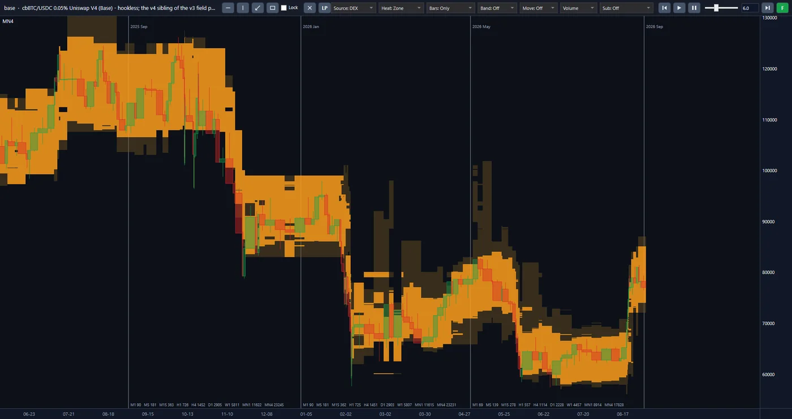
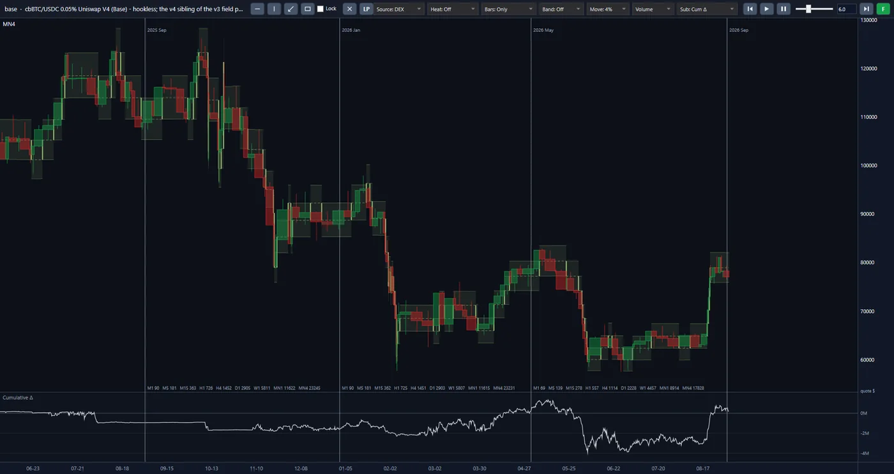
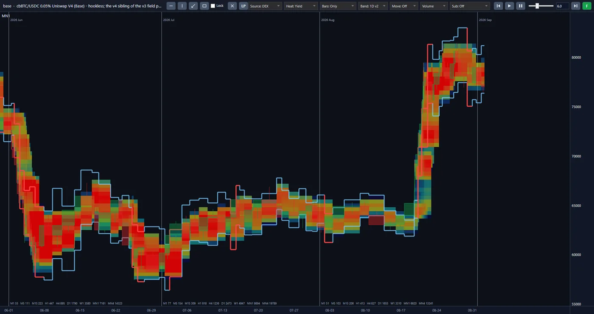

معرفیIntroduction
در صرافی غیرمتمرکز، خریدار و فروشنده با یکدیگر معامله نمیکنند. طرف هر معامله یک «استخر» است: سرمایهای که عدهای کنار هم گذاشتهاند تا دیگران با آن مبادله کنند و در ازایش کارمزد بپردازند. هر کس پولش را در استخر بگذارد سهمی از این کارمزد میگیرد. اما استخری که این ماه بهترین درآمد را دارد، ماه بعد لزوماً همان نیست: معاملهگران جابهجا میشوند، سرمایهی تازه میآید و سهم هر نفر کوچک میشود. بیشتر سرمایهها همانجا که روز اول نشستهاند میمانند. On a decentralised exchange, buyer and seller do not trade with each other. The other side of every trade is a "pool": capital that a number of people have put together so that others can swap against it and pay a fee in return. Whoever puts money in the pool takes a share of that fee. But the pool with the best income this month is not necessarily the same one next month: traders move on, fresh capital arrives and each person's share shrinks. Most capital stays where it sat on the first day.
ما تصمیم گرفتیم سرمایه را همراه فرصت جابهجا کنیم، و هر جابهجایی را پیش از انجام با دادهی خودِ بازار بسنجیم. We decided to move capital along with the opportunity, and to weigh every move against the market's own data before making it.
پروژهی دیفای الپی تاریخچهی کامل ۱۳۶ استخر را روی چهار شبکهی بلاکچین، از نخستین روز هر استخر تا امروز و در سطح تکتک رویدادها، گرد آورده است. بر پایهی این داده، نشستن سرمایه در استخر و جابهجایی آن میان استخرها را در بازسازی دقیقی از خودِ بازار شبیهسازی میکنیم و نتیجه را با پول واقعی مقابله کردهایم. مقصد ما یک صندوق خودکار است که پول را مدیریت میکند و آن را میان استخرها، به سوی بهترین بازده خالص، جابهجا میکند. The DeFi LP project has gathered the full history of 136 pools on four blockchain networks, from each pool's first day until today, at the level of every single event. From that data we simulate capital sitting in a pool, and moving between pools, inside a close reconstruction of the market itself, and we have checked the result against real money. The destination is an automated fund that manages money and moves it between pools, toward the best net return.
از داخل پلتفرمInside the platform
اینها تصویرهای واقعی از پلتفرم پروژهاند، نه طرح. هر سه نما یک استخر را نشان میدهند: cbBTC/USDC با کارمزد ۰٫۰۵٪ در Uniswap V4 روی شبکهی Base. برای بزرگتر دیدن، روی تصویر بزنید. These are real screens from the project's platform, not mock-ups. All three views show one pool: cbBTC/USDC at a 0.05% fee on Uniswap V4, on the Base network. Click the image to enlarge it.



کندلهای قیمت استخر از ژوئن ۲۰۲۵ تا اوت ۲۰۲۶، و دور آن نمای حرارتی Zone: ناحیههای رنگی در سطحهای قیمت. The pool's price bars from June 2025 to August 2026, and around them the Zone heat view: coloured zones across the price levels.
همان کندلها با قاب حرکتهای ۴ درصدی، و زیر آن پنل دلتای تجمعی به دلار. The same bars with the 4% move boxes, and beneath them the cumulative delta panel in dollars.
سه ماه آخر در نمای حرارتی Yield، همراه با نوار روزانه (Band: 1D) دور قیمت. The last three months in the Yield heat view, with the daily band (Band: 1D) around the price.
رویکردApproach
پول جایی مینشیند که حسابِ خالصش بهتر است، و وقتی این حساب عوض شود جابهجا میشود. کار در سه مرحله پیش میرود: Money sits where its net account is better, and moves when that account changes. The work proceeds in three stages:
-
از دادهی خام به تصویر کامل استخرFrom raw data to the full picture of the pool
تابلوی استخر تنها قیمت و حجم معامله را نشان میدهد. ما همهی رویدادهای ثبتشده در زنجیره را پردازش میکنیم و وضعیت استخر را برای هر لحظه از نو میسازیم. حاصل، تصویری است که نشان میدهد در هر سطح قیمت چه مقدار سرمایه نشسته بوده و چه زمانی آمده یا رفته است.
A pool's dashboard shows only price and traded volume. We process every event recorded on the chain and rebuild the pool's state for each moment. The result is a picture of how much capital sat at each price level, and when it came or went.
-
از تصویر استخر به سنجش هر استخرFrom the picture of the pool to measuring each pool
شبیهساز ما یک سرمایهی فرضی را در همان استخرِ بازسازیشده مینشاند و حساب میکند چه کارمزدی میگرفت و حرکت قیمت چه مقدار از آن را پس میگرفت. خروجی، عددی خالص و مقایسهپذیر برای هر استخر است. همهی استخرها با یک معیار سنجیده میشوند.
Our simulator places a hypothetical sum in that same rebuilt pool and works out what fee it would have earned and how much of it the price move would have taken back. The output is a net, comparable figure for each pool. All pools are measured by one yardstick.
-
از سنجش استخرها به مدیریت پولFrom measuring the pools to managing money
با کنار هم گذاشتن این عددها، الگوریتم سه تصمیم میگیرد: پول در کدام استخرها بنشیند، در هر کدام در چه بازهای از قیمت، و چه زمانی از یکی به دیگری برود. این مرحله امروز در مرحلهی مطالعه است.
Putting those figures side by side, the algorithm makes three decisions: which pools the money sits in, over what price range in each, and when it moves from one to another. This stage is under study today.
آنچه برجسته استWhat stands out
-
سرمایهای که یکجا نمیماند.Capital that does not stay in one place.
فرصت در این بازار جابهجا میشود و سرمایهی ساکن آن را از دست میدهد. استخری میتواند امروز معامله داشته باشد در حالی که ماههاست سرمایه از آن بیرون میرود؛ نمونهی واقعی آن را در دادههای خود دیده و ثبت کردهایم. الگوریتم همهی استخرهای زیر نظر را پیوسته با هم مقایسه میکند، نه یک بار در روز اول.
Opportunity moves in this market, and capital that stands still misses it. A pool can have trades today while capital has been leaving it for months; we have seen and recorded a real case of this in our data. The algorithm compares all the pools it watches continuously, not once on the first day.
-
جابهجاییای که هزینهاش را درمیآورد.A move that earns back its cost.
هر جابهجایی هزینه دارد: کارمزد تراکنش و اختلاف قیمت هنگام خروج و ورود. دنبالکردن هر نرخ بالاتر، سود را خرج همین هزینهها میکند. در سنجش ما هزینهی جابهجایی جزو حساب است و حرکتی که آن را جبران نکند انجام نمیشود.
Every move has a cost: the transaction fee and the price difference on the way out and in. Chasing every higher rate spends the profit on those costs. In our measurement the cost of moving is part of the account, and a move that does not make it back is not made.
-
سود خالص، نه نرخ اعلامشده.Net profit, not the advertised rate.
نرخ روی تابلوی استخر تنها کارمزد را نشان میدهد. آنچه ما گزارش میکنیم کارمزد است پس از کسر زیان حرکت قیمت، هزینهی تراکنش و اختلاف قیمت هنگام ورود. هر جزء جداگانه دیده میشود تا روشن باشد سود از کجا آمده و کجا رفته است.
The rate on a pool's dashboard shows only the fee. What we report is the fee after the loss from the price move, the transaction cost and the price difference on entry. Each part is shown separately, so it is clear where the profit came from and where it went.
-
شبیهسازیای که با پول واقعی مقابله شده است.A simulation checked against real money.
بسیاری از محاسبات این بازار روی کاغذ درستاند و در عمل نه. ما کارمزدی را که شبیهساز حساب میکند با کارمزدی که حدود ۴۴ هزار موقعیت واقعی در شش استخر از زنجیره برداشت کردهاند مقایسه کردهایم. اختلاف مجموع در بدترین استخر کمتر از یکدهم درصد است.
Many calculations in this market are right on paper and not in practice. We have compared the fee the simulator works out with the fee that about 44,000 real positions in six pools collected from the chain. The total difference in the worst pool is under a tenth of a percent.
-
دادهای که با خودِ زنجیره تطبیق داده شده است.Data reconciled with the chain itself.
مقایسهی استخرها روی دادهی ناقص به تصمیم غلط میرسد، و دادهی ناقص خود را نشان نمیدهد. برای هر ۱۳۶ استخر، رویدادهای بایگانی با زنجیره مقایسه شده و برای هر استخر گواهی سلامت صادر شده است. پنج نوع استخر روی چهار شبکه با یک موتور سنجیده میشوند.
Comparing pools on incomplete data leads to a wrong decision, and incomplete data does not announce itself. For all 136 pools the archived events have been compared with the chain, and a health certificate has been issued for each pool. Five kinds of pool on four networks are measured by one engine.
-
سرمایه بدون واسطه در استخر.Capital in the pool with no intermediary.
بخشی از زیانهای این بازار نه از خودِ بازار، که از قراردادهای واسطی آمده است که سرمایهی دیگران را نگه میداشتند. در طراحی ما سرمایه مستقیم و به نام صاحبش در استخر خواهد نشست. الگوریتم فقط دربارهی جای آن تصمیم خواهد گرفت.
Some of this market's losses came not from the market itself but from intermediary contracts that held other people's capital. In our design the capital will sit in the pool directly and in its owner's name. The algorithm will only decide where it goes.
مسیر پیش روThe road ahead
-
انجامشدهDone
زیرساخت داده، بازسازی استخر برای هر پنج نوع، شبیهساز سرمایه و سامانهی گزارش ساخته و آزموده شدهاند.
The data infrastructure, pool reconstruction for all five kinds, the capital simulator and the reporting system are built and tested.
-
امروزNow
امروز در مرحلهی مطالعه هستیم و قاعدههای نشستن و جابهجایی سرمایه را روی استخرهایی با رفتار متفاوت میسنجیم؛ هنوز هیچ راهبردی را نهایی اعلام نکردهایم.
Today we are at the study stage, measuring the rules for placing and moving capital on pools that behave differently; we have not yet declared any strategy final.
-
پس از آنNext
پس از آن، تکمیل غربال استخرها، آزمون راهبرد منتخب روی دورههای دیدهنشده و بازنویسی سامانه برای کار عملیاتی خواهد آمد.
After that come completing the pool screening, testing the chosen strategy on unseen periods, and rewriting the system for operational use.
-
گام پایانیFinal step
گام پایانی، اتصال به دادهی زنده و مدیریت پول واقعی در قالب یک صندوق خودکار است.
The final step is connecting to live data and managing real money, as an automated fund.
فناوریTechnology
آمادهسازی داده با پایتون و موتور تحلیل و شبیهساز با سیشارپ نوشته شده است. بایگانی ۱۳۶ استخر در بیش از شش هزار فایل نگهداری میشود و نسخهی سرور با نسخهی پشتیبان فایل به فایل یکسان است. هر تغییر تنها پس از گذشتن از بیش از ۴۵۰ آزمون خودکار پذیرفته میشود. Data preparation is written in Python, and the analysis engine and simulator in C#. The archive of 136 pools is kept in more than six thousand files, and the server copy is identical to the backup copy file by file. A change is accepted only after it has passed more than 450 automated tests.